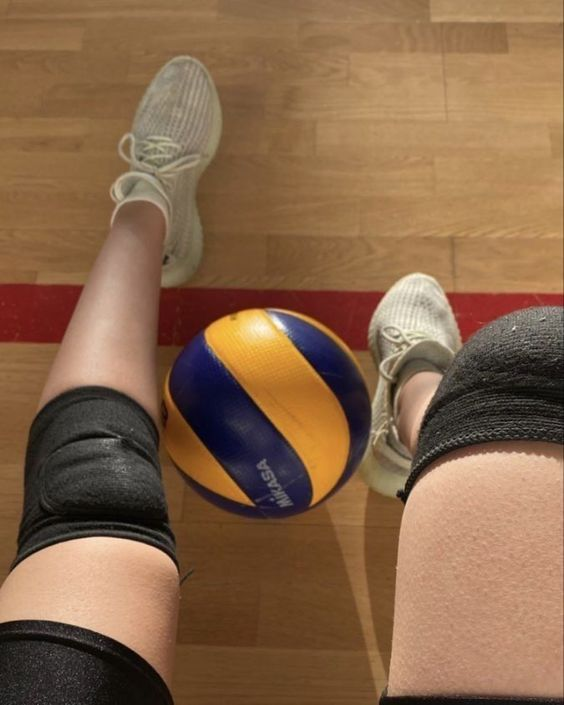
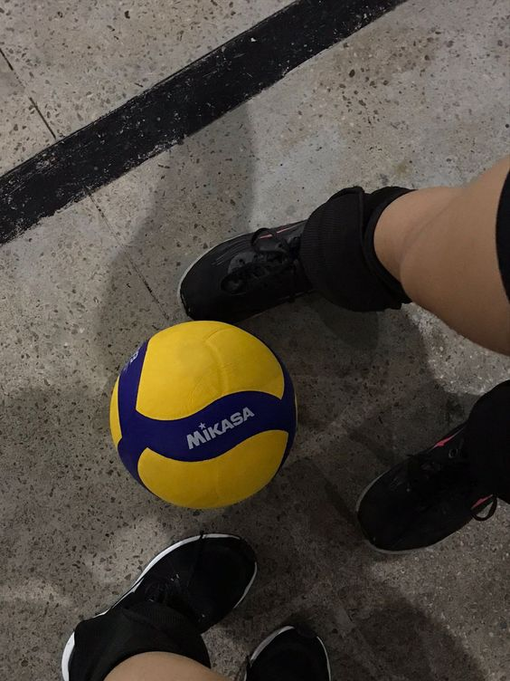

El voleibol es un deporte de equipo que se juega en una cancha dividida por una red, donde dos equipos de seis jugadores intentan pasar una pelota por encima de la red para que caiga en el suelo del campo contrario. El objetivo es hacer que la pelota toque el suelo del equipo contrario o que el equipo contrario cometa una falta. Las jugadas incluyen el saque, el pase, el remate y el bloqueo, todas ellas esenciales para avanzar en el juego y sumar puntos. La cooperación y la estrategia de equipo son claves para el éxito en el voleibol.
Este deporte se caracteriza por su rapidez y dinamismo, ya que los jugadores deben reaccionar rápidamente para interceptar o golpear la pelota con precisión. Cada set se juega hasta que un equipo alcanza los 25 puntos con una ventaja de al menos dos puntos. Además de la destreza física, el voleibol requiere de una buena comunicación entre los jugadores, ya que deben coordinarse para cubrir el terreno de juego, realizar las acciones correctas y responder de manera efectiva al ataque del equipo contrario.
El voleibol es popular en muchos países y se juega tanto a nivel profesional como amateur, ya sea en interiores o en su versión de playa. En los Juegos Olímpicos, es uno de los deportes más vistos, y muchas naciones han desarrollado ligas y competiciones de alto nivel. Además, es una actividad recreativa muy practicada en colegios y centros deportivos debido a que fomenta el trabajo en equipo, la resistencia física y la agilidad.
Las capacidades físicas condicionales incluyen la fortaleza, la flexibilidad, la resistencia y la velocidad. Estas capacidades son esenciales para realizar una amplia variedad de actividades físicas.